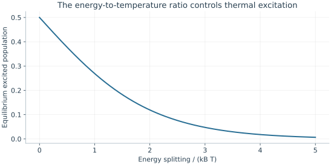
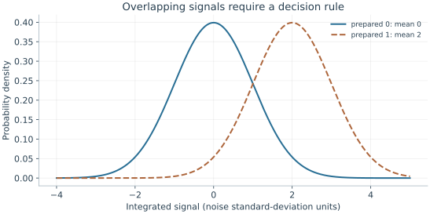

Starting point: Chapters 1–4; physical concepts and approximations are introduced as needed.
Anchor example: A noisy detector separating two qubit preparations.
This lesson includes explanations, worked examples, and problems with solutions. Advanced results whose proofs are outside the chapter are identified explicitly.
Our gates act on whatever state they receive. A computation, however, needs a known state at the start and a reliable bit at the end. Where does a known state come from, and how does a detector's signal become a bit?
We first ask what state a device reaches if we simply let it cool. Thermal equilibrium leaves a residual excited population, and asking how to do better leads to reset by measurement and feedback. A detector's signal then forces a statistical decision, which has assignment errors that we can count and correct. Asking what the measurement leaves behind separates the reported bit from the disturbance it causes. Finally we ask how long to listen to a signal, and what a second measurement tells us about the first.
Our first question is which state a device settles into when it is left alone.
5.1 Initialization
A device left alone exchanges energy with its surroundings and settles into some state. What is that state, and how can we get closer to \(\ket0\), faster? Thermal equilibrium sets a floor on the excited population. Measuring and correcting can go below that floor, but only as well as the measurement allows.
5.1.1 Thermal preparation
If we wait long enough, which state does the device reach? Not exactly \(\ket0\). The device trades energy with surroundings at temperature \(T\), and we use a result from statistical physics.
Physical input (Boltzmann law). In thermal equilibrium, level \(j\) has probability proportional to \(e^{-E_j/(k_BT)}\), where Boltzmann's constant \(k_B\) converts temperature into energy.
For two levels with energies \(0\) and \(\hbar\omega\), normalizing the two weights gives
At an energy-to-temperature ratio of five, \(p_1\simeq0.00669\). The state is mostly ground, not exactly ground. For a 5 GHz transition, \(hf/k_B\) is about 0.240 K, so a ratio of five needs a temperature near 48 mK. Whether the qubit really reaches such an effective temperature must be checked by measuring its populations. Poor thermal contact or stray radiation can heat it even when the refrigerator is cold.
5.1.2 Active reset
Waiting is slow, and it stops at the thermal floor. Can we prepare \(\ket0\) faster and better? Measure the qubit, and apply X if the outcome is 1. With ideal steps, either basis input ends in \(\ket0\).
Where did the uncertainty go? A thermal input is \(\ket0\) with probability \(1-p\) and \(\ket1\) with probability \(p\). After the measurement, the outcome records which of the two we have. The correction then sends both to \(\ket0\). The qubit ends in a known state because the randomness now sits in the measurement record, held by the apparatus, rather than in the qubit.
What do measurement errors do to this? Suppose the readout reports the wrong value with probability \(e\) for either input, and the conditional X is perfect. A ground input misread as 1 is flipped up, with probability \((1-p)e\). An excited input misread as 0 is left alone, with probability \(pe\). The residual excited population is \((1-p)e+pe=e\), whatever \(p\) was. The delay between measurement and correction adds another error, because the qubit can relax or be excited while the feedback is computed. So a reset is tested as a whole, including that delay, with leaked population counted separately from residual excitation.

The normalized two-level Boltzmann population is 1/(1+exp[ℏω/kBT]). This assumes equilibrium of the qubit, not simply a stated refrigerator temperature.
Problem 5.1. At ΔE/kBT=5, estimate thermal excited population.
Worked solution
It is 1/(1+e⁵)≈0.00669. This is an equilibrium two-level prediction, not a universal device initialization error.
5.2 Measurement Signals
Reset relies on a measurement, and a real detector produces a signal, not a bit. The signals for the two states overlap, so any rule that turns a signal into a bit makes mistakes. How should we choose the rule, and how do its mistakes distort the probabilities we report? Modelling the two signal distributions gives a threshold and its assignment errors. Counting the ways to report each outcome then lets us correct the statistics, and asking what the detector did to the qubit separates assignment from disturbance.
5.2.1 State-dependent response
How do we turn a continuous signal into a bit? A readout device converts the qubit's state into an integrated signal \(s\). Let \(f_0(s)\) and \(f_1(s)\) be its probability densities when we prepare 0 and when we prepare 1. A threshold splits the possible values of \(s\) into those we call 0 and those we call 1. Where the two densities overlap, some signals are called wrongly. These assignment errors occur even if the electronics record \(s\) perfectly.
Where should the threshold go? For equally likely states and Gaussian signals with means \(\mu_0,\mu_1\) and equal width \(\sigma\), the two densities cross at the midpoint, and that is the best threshold. Moving it lowers one assignment error at the expense of the other. With unequal prior probabilities or unequal widths, the best threshold moves. So a readout histogram is meaningful only together with the calibrated preparations, the normalization of \(s\), and the decision rule.
5.2.2 Assignment and backaction
How do assignment errors distort the reported statistics? Let \(e_0\) be the probability of reporting 1 after preparing 0, and \(e_1\) the probability of reporting 0 after preparing 1. If the true excited population is \(p\), there are two ways to report 1:
For \(p=0.8\) and \(e_0=e_1=0.02\), the observed fraction is 0.788. Solving this relation for \(p\) corrects the statistics. The correction is meaningful only if the calibration applies to the same experiment and \(1-e_0-e_1\) is not too small.
Does a correct report mean the qubit is ready for the next gate? Not necessarily. The change that a measurement makes to the state it leaves behind is called its backaction. A detector may report the initial state correctly and still leave the qubit relaxed, excited, or leaked. Assignment and backaction are therefore separate properties. Backaction is revealed only by what a later operation or measurement finds, as a function of the time between them.

Equal-variance Gaussian models are centered two standard deviations apart. Their overlap causes assignment errors. A midpoint threshold is optimal here only for equally likely preparations and symmetric decision costs.
Problem 5.2. If e0=e1=1/2, can the assignment relation be inverted?
Worked solution
No. The output is always a fair bit independent of p, so the detector contains no information about the population.
5.3 Readout Design
A readout's assignment error depends on how long we listen and on what the qubit does meanwhile. How long should we integrate, and what does a second measurement reveal about the first? Averaging samples sharpens discrimination until the qubit itself changes. Repeating the measurement then tests whether the readout leaves the reported state in place.
5.3.1 Integration and discrimination
Why does listening longer help? Suppose a time record consists of independent samples whose means differ by \(\delta\) between the two states, each with noise variance \(\sigma_0^2\). Averaging \(M\) samples keeps the mean separation at \(\delta\) but reduces the variance to \(\sigma_0^2/M\). The separation measured in units of the noise therefore grows as \(\sqrt M\).
Why not listen forever, then? The qubit may relax while we listen. If its state changes halfway through, the average mixes two responses and need not resemble either calibrated distribution. Samples can also be correlated, and amplifier noise can drift. So the best integration window comes from a model that includes the qubit's own dynamics, not from the \(\sqrt M\) law alone.
5.3.2 Repeated measurement and reuse
What should an ideal measurement leave behind? An ideal repeatable Z measurement has operators \(P_0=\ket0\bra0\) and \(P_1=\ket1\bra1\). Outcome \(j\) leaves the state \(P_j\ket\psi/\sqrt{p_j}\), so an immediate identical measurement returns \(j\) with certainty. A measurement that leaves the qubit in the reported state in this way, so that repeating it agrees, is called a quantum nondemolition measurement. The prediction assumes no evolution and no measurement-induced transition between the two measurements.
What does disagreement between two reports tell us? It can come from assignment error, from a real transition, or from leakage. A single repeatability percentage mixes these causes. The joint probabilities of the two reports, measured as a function of the time between them, separate them. A measurement used in the middle of a computation must also leave neighbouring qubits undisturbed, a requirement that a final measurement does not face.
Problem 5.3. Does a destructive detector with perfect labels qualify as reusable nondemolition readout?
Worked solution
No. It may identify the original state exactly while consuming the carrier. Reuse and preservation are separate requirements.
Even when we intend to do nothing, a qubit's state changes. Does it lose energy, lose phase, or both, and where does the lost information go?
Worked model check. A detector has e0=0.03 and e1=0.07. It reports one on 48% of trials. Infer the excited population under a valid fixed assignment model.
Worked solution
\(0.48=0.03+0.90p\), giving \(p=0.5\). This inversion does not repair backaction or an invalid calibration.
These exercises draw on the whole chapter. Attempt each question before opening a hint, explain your reasoning, then compare it with the worked solution.
For a \(5\) GHz qubit, \(hf/k_B\approx0.240\) K. Using \(p_1=1/(1+e^{hf/k_BT})\), find the thermal excited population at an effective temperature of \(50\) mK and of \(100\) mK. What does the comparison say about a hot qubit in a cold refrigerator?
Hint 1
The ratios \(hf/k_BT\) are \(4.8\) and \(2.4\).
Hint 2
\(e^{4.8}\approx122\), \(e^{2.4}\approx11\).
Worked solution
At \(50\) mK, \(p_1=1/(1+e^{4.8})\approx0.008\); at \(100\) mK, \(p_1=1/(1+e^{2.4})\approx0.083\). Doubling the effective temperature raises the excited population tenfold. The qubit’s effective temperature is set by its coupling to everything, including stray radiation, not just the refrigerator reading, so it must be inferred from measured populations.
A detector has \(e_0=0.05\) and \(e_1=0.10\). If the true excited population is \(p=0.3\), what fraction of shots reports \(1\)? If \(60\%\) of shots report \(1\), what population does the assignment model infer?
Hint 1
\(p_{\rm report}(1)=e_0+(1-e_0-e_1)p\).
Hint 2
\(1-e_0-e_1=0.85\).
Worked solution
Reported fraction: \(0.05+0.85\times0.3=0.305\). Inverting, \(p=(0.60-0.05)/0.85\approx0.647\). The inversion is valid only if \(e_0,e_1\) were calibrated under the same conditions, and the factor \(1/0.85\) also amplifies statistical noise in the reported fraction.
A readout records independent samples with mean separation \(0.2\sigma_0\) per sample. With a midpoint threshold and equal priors, each assignment error is \(Q(d/2)\), where \(d\) is the separation in units of the averaged noise and \(Q(3.09)\approx10^{-3}\). How many samples \(M\) are needed for an assignment error of \(10^{-3}\)?
Hint 1
After \(M\) samples, \(d=0.2\sqrt M\).
Hint 2
Require \(d/2=3.09\).
Worked solution
Averaging \(M\) samples gives \(d=0.2\sqrt M\). Requiring \(d/2=3.09\) gives \(d=6.18\) and \(M=(6.18/0.2)^2\approx955\) samples. The error falls rapidly with \(M\) once \(d\) is a few units, but only if the state does not change during the record, which the next exercises examine.
Active reset measures the qubit and applies \(X\) on outcome \(1\). The initial excited population is \(p=0.1\), and the assignment errors are \(e_0=0.01\), \(e_1=0.05\). (a) Find the residual excited population after an ideal conditional \(X\). (b) If the feedback takes \(\tau=1\) μs and \(T_1=50\) μs, how does relaxation during the delay change the result? (c) Compare with waiting \(5T_1\) for thermal relaxation to \(p_{\rm eq}=0.005\).
Hint 1
Errors: a ground state wrongly flipped, or an excited state wrongly left alone.
Hint 2
During the delay, an excited state reported as \(1\) may decay before the \(X\) flips it back up.
Worked solution
(a) Residual \(=(1-p)e_0+pe_1=0.009+0.005=0.014\). (b) An excited qubit correctly reported as \(1\) decays during the delay with probability about \(\tau/T_1=0.02\); the \(X\) then flips it from \(\ket0\) to \(\ket1\). This adds about \(p(1-e_1)\times0.02\approx0.002\), for a total near \(0.016\). (c) Waiting \(5T_1=250\) μs gives about \(p_{\rm eq}+pe^{-5}\approx0.0057\), better but \(250\) times slower. Reset quality depends on assignment, latency, and the thermal floor together.
An experiment reports \(1\) on a fraction \(\hat r\) of \(N=10^4\) shots and infers \(p=(\hat r-e_0)/(1-e_0-e_1)\). (a) If \(\hat r\approx0.5\), find the statistical standard deviation of \(\hat r\). (b) Propagate it to the inferred \(p\) for \(e_0+e_1=0.1\) and for \(e_0+e_1=0.8\). (c) What happens as \(e_0+e_1\to1\)?
Hint 1
The standard deviation of a binomial fraction is \(\sqrt{\hat r(1-\hat r)/N}\).
Hint 2
Divide by \(1-e_0-e_1\).
Worked solution
(a) \(\sqrt{0.25/10^4}=0.005\). (b) With \(1-e_0-e_1=0.9\), the inferred \(p\) has standard deviation about \(0.0056\); with \(0.2\), about \(0.025\), five times worse than the raw fraction. (c) As \(e_0+e_1\to1\) the detector output stops depending on the qubit, the inversion divides by nearly zero, and both statistical and calibration errors blow up. Assignment correction is reliable only for a reasonably good detector.
Two equal-width Gaussian signal distributions have means \(\mu_0=0\) and \(\mu_1=4\sigma\). The prior probability of \(\ket0\) is \(0.9\). (a) Find the optimal threshold, where \(0.9f_0(s)=0.1f_1(s)\). (b) Compare with the midpoint \(2\sigma\). (c) Why does the threshold move toward \(\mu_1\)?
(a) Solving gives \(s^*=\frac{\mu_0+\mu_1}{2}+\frac{\sigma^2\ln(0.9/0.1)}{\mu_1-\mu_0}=2\sigma+\frac{\ln9}{4}\sigma\approx2.55\sigma\). (b) The threshold moves \(0.55\sigma\) above the midpoint. (c) Since \(\ket0\) is nine times more likely, a signal near the midpoint is more probably a noisy \(\ket0\) than a \(\ket1\), so the rule demands stronger evidence before reporting \(1\). This is the same Bayesian reasoning as Bob’s lamp in a discrete setting: the optimal decision depends on priors as well as the response distributions.
A qubit prepared in \(\ket1\) is measured twice, with separation \(\tau\). Each report has symmetric assignment error \(e=0.01\), and the qubit decays with \(T_1=100\) μs between reports. (a) Estimate the probability that the two reports disagree for \(\tau=0\) and \(\tau=1\) μs. (b) How would measuring the disagreement as a function of \(\tau\) separate the two mechanisms?
Hint 1
Assignment alone: disagreement about \(2e(1-e)\).
Hint 2
Decay between reports adds about \(\tau/T_1\).
Worked solution
(a) At \(\tau=0\), disagreement comes only from assignment: about \(2e(1-e)\approx0.020\). At \(\tau=1\) μs, decay between the reports adds about \(\tau/T_1=0.01\), for roughly \(0.030\). (b) Assignment errors give a constant offset independent of \(\tau\), while relaxation adds a part growing as \(1-e^{-\tau/T_1}\). Fitting the disagreement against \(\tau\) separates them; transitions induced by the measurement itself appear as a \(\tau\)-independent excess beyond the calibrated assignment error.
A student says: “Integrating the readout signal longer always improves assignment, because the noise falls as \(1/\sqrt M\).” With \(T_1=50\) μs and an integration window of \(2\) μs, estimate the error floor from decay during the window. What limits the useful integration time?
Hint 1
A decay partway through the window is misassigned roughly half the time.
Hint 2
The decay probability during the window is about \(\tau/T_1\).
Worked solution
The probability of decaying during a \(2\) μs window is about \(\tau/T_1=0.04\), and a qubit that decays partway through gives a signal between the calibrated distributions, misassigned roughly half the time: an error floor near \(2\%\) for excited inputs. Longer integration reduces the Gaussian overlap but increases this floor. The useful window balances noise averaging against relaxation (and against drifts and correlations in the amplifier noise), and is usually much shorter than \(T_1\).
Model the assignment error of an excited input as \(Q\big(k\sqrt\tau/2\big)+\tau/(2T_1)\), with \(k=6.32\ \mu\mathrm s^{-1/2}\) and \(T_1=50\) μs. (a) Evaluate it at \(\tau=0.1\) μs and \(\tau=2\) μs. (b) A numerical minimization gives an optimum near \(\tau\approx0.85\) μs with error about \(0.010\). Check the two contributions there. (c) How would a qubit with \(T_1=500\) μs change the optimum?
(a) At \(0.1\) μs: \(Q(1.0)+0.001\approx0.16\), dominated by overlap. At \(2\) μs: \(Q(4.47)+0.02\approx0.020\), dominated by decay. (b) At \(0.85\) μs, \(k\sqrt\tau/2\approx2.91\), giving \(Q\approx0.0018\), plus \(0.85/100=0.0085\), totalling about \(0.010\). (c) With \(T_1=500\) μs the decay term is ten times smaller, so the optimum shifts to a longer window (about \(1.5\) to \(2\) μs in this model) and the minimum error falls to a few parts in \(10^3\). Readout fidelity is limited jointly by signal-to-noise ratio and qubit lifetime.
Heralded initialization measures the qubit and keeps only runs that report \(0\). With thermal excited population \(p=0.08\), \(e_0=0.02\), and \(e_1=0.05\), (a) find the fraction of runs kept; (b) use Bayes’ rule to find the probability that a kept run is actually excited; (c) compare with the unheralded \(p\), and state the costs of this method.
(a) \(P(0)=0.92\times0.98+0.08\times0.05=0.9016+0.004=0.9056\): about \(91\%\) of runs are kept. (b) \(P(\text{excited}\mid0)=0.004/0.9056\approx0.0044\). (c) Heralding reduces the excited population from \(8\%\) to about \(0.44\%\), limited by \(e_1\). It costs \(9\%\) of the runs, a measurement’s duration, and possible measurement-induced disturbance, so the measurement must be nondemolition: it must leave a qubit reported as \(0\) actually in \(\ket0\).